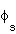

Previous Section Headers
2.3 Model Input Datasets
CAM2.0.2 is a combination of atmosphere, land, ocean and sea-ice
components. In what follows we discuss the input datasets required by
each of these components. CSMDATA refers to the root directory where
the distribution datasets have been untarred by the user.
2.3.1 Atmosphere Component Datasets
Input datasets needed for the atmospheric component provide initial
state data, ozone boundary data and water vapor
absorptivity/emissivity data. Only the ozone dataset contains
time-variant input data which is based on a 365 day year with no leap
years. All initial and boundary datasets are in NetCDF format.
In general, input dataset names follow the convention:
<type><simulation date><resolution><Spectral truncation>
<Vertical levels><creation date>
Where
- Simulation date = The specific date that the given dataset is valid for. In the
case of initial condition datasets this is typically given in YYYY-MM-DD form.
Datasets that are valid over a span of dates typically list the year range.
- Resolution = Number of latitudes by the number of longitudes for the grid being used
(i.e. 64x128, 32x64 etcetera).
- Spectral truncation = For Spectral dynamical cores (eul or sld) the spectral
truncation applied to the dataset (T42, T63 etcera). This is only given if the
dataset in question has had spectral truncation applied to it.
- Vertical levels = Number of vertical levels (L26, L18 etc.)
- Creation date = The date the file was created in cYYMMDD format.
2.3.1.1 Initial Conditions Dataset
The initial conditions, dataset is specified by namelist variable
NCDATA. This dataset contains initial values of the
prognostic variables
U, V, T, Q,
PS, TSICE, SNOWHICE
and TS1 through TS4, the surface geo-potential field
PHIS, the grid-box land fraction LANDFRAC, the land
ocean transition mask LANDM, and the standard deviation of
geo-potential height SGH. When running flux-coupled the fields:
TSICE, SNOWHICE, LANDFRAC and TS1 through TS4 are not included on the dataset.
Required initial fields are
outlined in Table 2.6.
Table 2.6: Atmospheric Component Initial Dataset Fields
History file
Field Name
|
Variable Name
|
Description
|
|
Multi-Level Fields
|
| T |
T |
Temperature (K) |
| U |
u |
Zonal Wind component (m/sec) |
| V |
v |
Meridional Wind component (m/sec) |
| Q |
q |
Water vapor specific humidity
(KgH2O/Kgair) |
|
Single Level Fields
|
| PHIS |
 |
Surface geo-potential (m2/s2) |
| PS |
Ps |
Surface pressure (Pa) |
| SGH |
SGH |
Standard deviation of geo-potential height (m) |
| LANDM |
landm |
Land Ocean transition mask:
= 0 ocean
= 1 continent
= 0-1 transition |
| TS |
Ts |
Surface temperature. |
| TSICE |
Tice |
CSIM sea-ice model snow/ice surface temperature (not stored on
CCSM flux-coupled simulations). |
| SNOWHICE |
|
Snow depth over ice |
| LANDFRAC |
|
Land fraction |
| TS1,TS2,TS3,TS4 |
Ts |
Four CSIM sea-ice subsurface temperature
levels (not stored on CCSM flux-coupled simulations) (K)
|
At times it may be desirable to start the model from a more exact state of the
atmosphere, with some of the fast processes (spin-up time < 1 day) also represented
on the initial conditions file. Table 2.6a lists optional fields which the
model will read if they exist on the file. Fields which don't exist will be set
to arbitrary values as indicated in the table:
Table 2.6a: Optional Atmospheric component
initial dataset fields (representing "fast" processes)
History file
Field Name
|
Variable Name
|
Description
|
|
Multi-Level Fields
|
| CLDLIQ |
q(:,:,,ixcldliq,:) |
Cloud liquid water mass mixing ratio
(Kgliq/Kgair);
set to 0. if READTRACE=.false.
or field not on file |
| CLDICE |
q(:,:,,ixcldice,:) |
Cloud ice mass mixing ratio
(Kgice/Kgair);
set to 0. if READTRACE=.false.
or field not on file |
| CLOUD |
cld |
Cloud fraction ;
set to 0. if field not on file |
| QCWAT |
qcwat |
Specific humidity associated with cloud water routines ;
(KgH2O/Kgair); set to Q if field not on file |
| TCWAT |
Tcwat |
Temperature associated with cloud water routines ;
(K); set to T if field not on file |
| LCWAT |
lcwat |
Total cloud water amount
(liquid + ice) associated with cloud water routines ;
(Kgcwat/Kgair); set to "CLDLIQ+CLDICE"
if field not on file |
|
Single Level Fields
|
| PBLH |
pblht |
PBL height (m);
set to 0. if field not on file |
| TPERT |
Tpert |
Perturbation temperature (eddies in PBL) (K);
set to 0. if field not on file |
| QPERT |
qpert |
Perturbation specific humidity (eddies in PBL) (KGH2O/KGair);
set to 0. if field not on file |
| TSICERAD |
Tice_rad |
Radiatively equivalent Surface T over seaice (K);
set to TSICE if field not on file |
| TBOT |
Tbot |
Lowest model level temperature (K);
set to T(:,plev,:) if field not on file |
By default, the model periodically
writes an instantaneous initial conditions file containing all the fields in
Table 2.6 and Table 2.6a for possible use as initial datasets in other runs.
The frequency with which these datasets are written is controlled by the namelist
variable INITHIST.
Finite-volume dynamics uses the same set of prognostic variables as
shown above, except that U and V are on a staggered grid and are
identified with names US and VS. When running with finite-volume
dynamics, the initial dataset must contain US and VS; U and V are
ignored.
All fields are instantaneous values. In addition to the
fields listed above, the initial dataset contains information on the
model date, the dimensionality of the fields,
the spectral truncation, and the latitudes, longitudes, and vertical
levels of the data.
A T42 (64 latitudes x 128 longitudes grid resolution) 26-level initial
dataset is provided with the CAM2.0.2 distribution:
CSMDATA/atm/cam2/inic/gaus/cami_0000-09-01_64x128_T42_L26_c020514.nc.
Other initial datasets at different model resolutions can also be
found in the directories
CSMDATA/atm/cam2/inic/gaus
and
CSMDATA/atm/cam2/inic/fv
2.3.1.2 Ozone Dataset
The ozone boundary dataset contains ozone volume mixing ratios which
are constant for a given latitude. This dataset is defined on a
pressure grid (unlike the hybrid grid of the model). These values are
interpolated to the model vertical levels at each model grid
point. The ozone dataset is in NetCDF format and contains the fields
PS and OZONE. PS is a constant 1000 mb
pressure field needed for interpolation. The ozone dataset is
specified by namelist variable BNDTVO. Unlike the initial
conditions file, CAM is capable of interpolating the ozone dataset to
any vertical and or horizontal resolution so the user need not specify
new ozone datasets when changing model resolution. The default
ozone dataset provided with the distribution is
CSMDATA/atm/cam2/ozone/pcmdio3.r8.64x1_L60_clim_c970515.nc.
2.3.1.3 Water vapor absorptivity/emissivity dataset
This is a lookup table for water vapor absorption. It is specified by
setting the namelist variable, ABSEMS_DATA. The default
dataset provided with the dataset distribution can be found in
CSMDATA/atm/cam2/rad/abs_ems_factors_fastvx.052001.nc.
2.3.1.4 Aerosol Mass dataset
[Science description if any goes here]. As of CAM2.0.2.dev40, CAM requires
the input aerosol dataset to be resolution-dependent. Memory and startup CPU
overheads proved to be a bottleneck in the original implementation. Now
horizontal interpolation to the target CAM grid and vertical integrals are
done offline. Code and README describing the procedure are in subdirectory
cam/tools/interpaerosols of the CAM distribution.
CSMDATA/atm/cam2/rad/abs_ems_factors_fastvx.052001.nc.
2.3.2 Ocean Component Datasets
The ocean component is a data ocean model which reads in input sea
surface temperature (SST) data. Running the data ocean component
requires a time-variant SST dataset. The SST dataset must be at
the model resolution and is specified by the namelist variable
BNDTVS.
The standard SST dataset is a climatological dataset containing 12
monthly time samples. The model can also read multi-year SST
datasets. If a multi-year SST dataset is used, the namelist
variable, SST_CYC must be set to .false. (it's
default value is .true.).
An SST dataset on a (64 X 128) Gaussian grid can be found in
CSMDATA/atm/cam2/sst/sst_HadOIBl_bc_64x128_clim_c020411.nc.
Other SST datasets, at different model resolutions, can also be found
in this directory.
2.3.3 Sea-Ice Component Datasets
The sea-ice component in CAM2.0.2 is a simplified version of the CCSM
CSIM4 code. This component requires ice coverage data. The ice
coverage data is contained in the same file as the SST data required
by the ocean component. For the standard configuration, ice-coverage
data is found in
CSMDATA/atm/cam2/sst/sst_HadOIBl_bc_64x128_clim_c020411.nc.
2.3.4 Land Component Datasets
For a full discussion of CLM2.1 input datasets see the CLM2.1 User's
Guide at
http://www.cgd.ucar.edu/tss/clm/distribution
CLM2.1 always requires a dataset providing plant functional type
physiological constants. This dataset is specified via the CLM2.1
namelist variable FPFTCON.
A time-invariant CLM surface dataset will be generated at run time
if the CLM namelist variable FSURDAT is set to blank. If
this is the case, additional settings must be provided for
MKSRF_FGLACIER, MKSRF_FLAI, MKSRF_FLANWAT,
MKSRF_FSOICOL, MKSRF_FSOITEX, MKSRF_FURBAN,
MKSRF_FVEGTYP. If a surface dataset at the model resolution
already exists, then FSURDAT should be set appropriately.
The default land surface dataset provided with the distribution is
CSMDATA/lnd/cam/srfdata/cam/clms_64x128_c020514.nc.
Other provided surface datasets at other model resolutions can also be
found in this directory.
CLM2.1 initial conditions will be generated at run time if the CLM2.1
namelist variable FINIDAT is blank (the default setting).
It is important to note that due to the differences in data
structures, CLM2.1 initial datasets are not in the same form as CLM2.0
initial datasets. The directory models/lnd/clm2/tools/convert_inic contains
routines needed to perform the conversion of CLM2.0 initial datasets
to CLM2.1 form. The README file in that directory contains
necessary information to build and utilize the conversion tool.
If spun up values exist for a model run, then FINIDAT should be
correspondingly set. The default initial dataset provided with the
distribution is:
CSMDATA/lnd/clm2/inidat_2.1/cam/clmi_0000-09-01_64x128_T42_c021125.nc.
This initial dataset should only be used in conjunction with
the default CLM2.1 surface dataset given above.
Sub Sections
-
2.3.1 Atmosphere Component Datasets
-
-
2.3.1.1 Initial Conditions Dataset
-
-
2.3.2 Ocean Component Datasets
-
-
2.3.3 Sea-Ice Component Datasets
-
-
2.3.4 Land Component Datasets
-

 Search page
Search page
Questions on these pages can be sent to...
erik@ucar.edu .
$Name: $ $Revision: 1.1.2.8 $ $Date: 2003/10/22 22:53:06 $ $Author: rosinski $